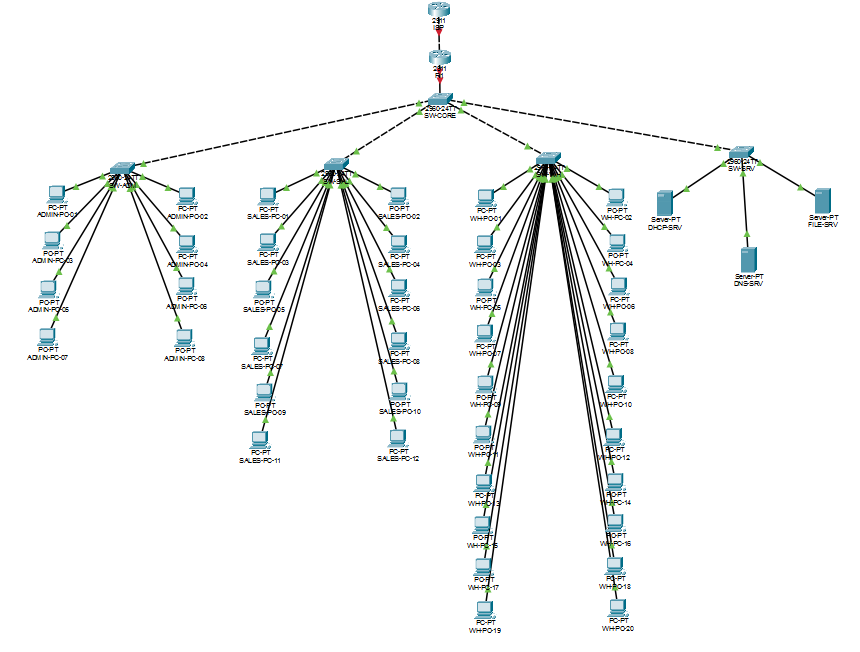
The Milestone 1 design was built without changing a single VLAN, subnet or gateway. Every configuration was written as a reviewable command file first, applied one device at a time, and checked with a show command before moving on. Every claim in this document is backed by a screenshot taken from the running Packet Tracer network.
Milestone 2 turns the approved Milestone 1 design into a working network in Cisco Packet Tracer 9.0.1, then proves it works and demonstrates the assigned troubleshooting challenge on it.
| Requirement | Delivered as | Where |
|---|---|---|
| Working Packet Tracer file | Complete HQ network: 7 network devices, 43 end devices, all configured and saved in the repaired, healthy state | tshimo-agri-hq-milestone-2.pkt |
| Assigned feature implemented | Advanced fault isolation: a VLAN pruned from a trunk, injected, diagnosed layer by layer, fixed and verified | Section 7 |
| Testing evidence | 12 functional tests across Layers 1–7, every one captured from the live simulation | Sections 3–6 |
| Updated GitHub portfolio | Configs, screenshots, test log, troubleshooting record and this report, committed in logical steps — github.com/MALULEKE-KS/tshimo-agri-network | Section 10 |
| Device | Packet Tracer model | Role |
|---|---|---|
| ISP | Cisco 2911 | Simulated provider: far end of the WAN link, loopback 203.0.113.1 as the "internet" test target |
| R1 | Cisco 2911 | Edge router: inter-VLAN routing (router-on-a-stick), DHCP relay, default route, NAT/PAT |
| SW-CORE | Cisco 2960-24TT | Layer 2 distribution: trunks R1 down to all four access switches |
| SW-ADM / SW-SAL / SW-WH / SW-SRV | Cisco 2960-24TT | One access switch per department; 24 ports each for physical headroom |
| ADMIN-PC-01…08 | PC-PT | VLAN 10 Admin/Management users |
| SALES-PC-01…12 | PC-PT | VLAN 20 Sales users |
| WH-PC-01…20 | PC-PT | VLAN 30 Warehouse/Logistics users, including the 8 CR1 staff |
| DHCP-SRV / DNS-SRV / FILE-SRV | Server-PT | VLAN 40 Central DHCP, internal DNS, file and web services |
The physical build was completed and saved as an unconfigured baseline (tshimo-agri-hq-baseline.pkt) before any IOS configuration, so the wiring could be checked on its own.
| Cable | From | To | Cable type | Logical role |
|---|---|---|---|---|
| C01 | ISP Gi0/0 | R1 Gi0/1 | Crossover | Routed WAN, 10.23.1.0/30 |
| C02 | R1 Gi0/0 | SW-CORE Gi0/1 | Straight-through | 802.1Q trunk (router-on-a-stick) |
| C03 | SW-CORE Fa0/1 | SW-ADM Fa0/1 | Crossover | 802.1Q trunk |
| C04 | SW-CORE Fa0/2 | SW-SAL Fa0/1 | Crossover | 802.1Q trunk |
| C05 | SW-CORE Fa0/3 | SW-WH Fa0/1 | Crossover | 802.1Q trunk |
| C06 | SW-CORE Fa0/4 | SW-SRV Fa0/1 | Crossover | 802.1Q trunk |
Cable types follow the standard rule: straight-through between unlike devices (router↔switch, switch↔PC/server) and crossover between like devices (router↔router, switch↔switch). The 2911 and 2960 support Auto-MDIX and would usually bring a wrong cable up anyway, but the build uses the textbook-correct cable so it doesn't rely on that.
| Switch | Ports | Devices | VLAN |
|---|---|---|---|
| SW-ADM | Fa0/2 – Fa0/9 | 8 Admin PCs | 10 |
| SW-SAL | Fa0/2 – Fa0/13 | 12 Sales PCs | 20 |
| SW-WH | Fa0/2 – Fa0/21 | 20 Warehouse PCs (12 + 8 CR1) | 30 |
| SW-SRV | Fa0/2, Fa0/3, Fa0/4 | DHCP-SRV, DNS-SRV, FILE-SRV | 40 |
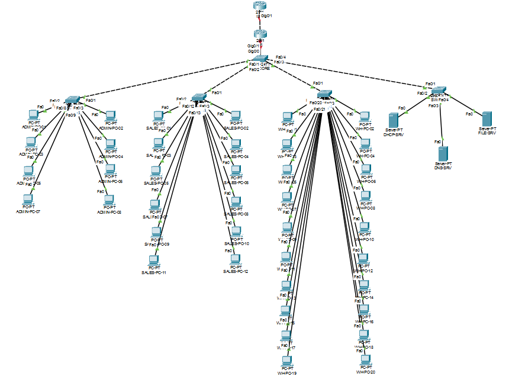
| VLAN | Name | Subnet | Gateway (R1) | Where it lives |
|---|---|---|---|---|
| 10 | ADMIN | 10.23.0.0/26 | 10.23.0.1 | SW-ADM access ports |
| 20 | SALES | 10.23.0.64/26 | 10.23.0.65 | SW-SAL access ports |
| 30 | WAREHOUSE | 10.23.0.128/26 | 10.23.0.129 | SW-WH access ports |
| 40 | SERVERS | 10.23.0.192/26 | 10.23.0.193 | SW-SRV access ports |
| 99 | MGMT-NATIVE | 10.23.1.16/28 | 10.23.1.17 | Native VLAN on every trunk; switch management SVIs |
switchport mode trunk) with native VLAN 99 and an explicit allowed list of 10,20,30,40,99. Moving the native VLAN off VLAN 1 keeps untagged traffic out of the default VLAN..18, SW-ADM .19, SW-SAL .20, SW-WH .21, SW-SRV .22 (all /28) — with default gateway 10.23.1.17.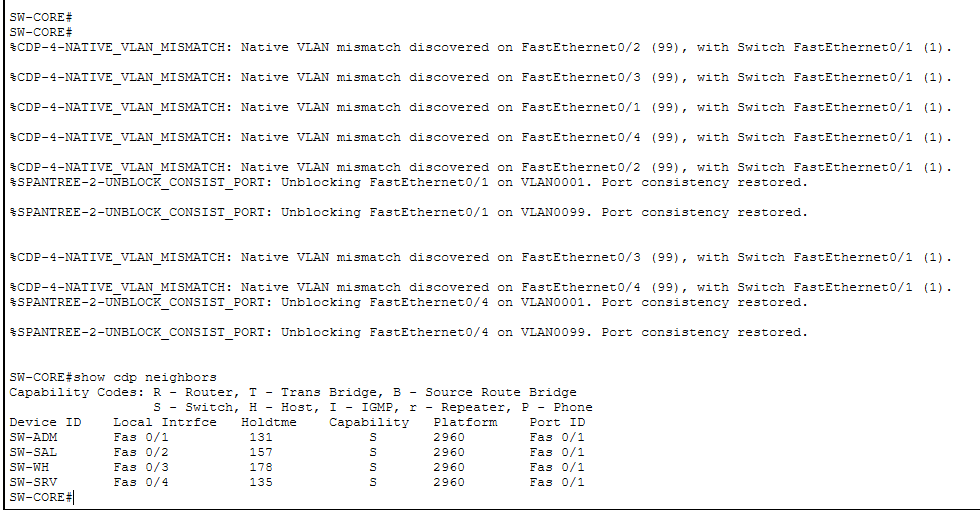
show cdp neighbors: Fa0/1 → SW-ADM, Fa0/2 → SW-SAL, Fa0/3 → SW-WH, Fa0/4 → SW-SRV, each on the neighbour's Fa0/1 — the port map confirmed from the switch itself. The native-VLAN-mismatch messages above it were logged while the switches were configured one at a time; each cleared ("Port consistency restored") once both ends of a trunk had native VLAN 99. R1 isn't listed yet because it was configured afterwards.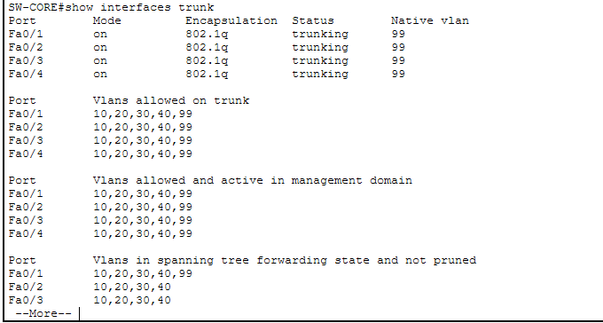
show interfaces trunk: Fa0/1–Fa0/4 all trunking, 802.1Q, native VLAN 99, allowed 10,20,30,40,99. (Gi0/1 to R1 came up once R1 was configured — see Figure 17.)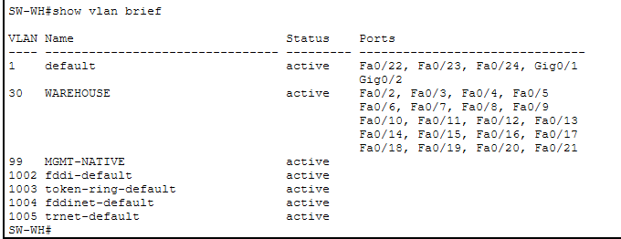
show vlan brief: VLAN 30 WAREHOUSE holds exactly 20 access ports, Fa0/2–Fa0/21 — the 12 original Warehouse staff plus the 8 added by Change Request 1.The switches are Layer 2 only, so R1 is the single point where traffic moves between VLANs. Its Gi0/0 carries no IP address; instead it has one 802.1Q subinterface per VLAN, and each subinterface's address is that VLAN's default gateway.
| Subinterface | Encapsulation | IP address | DHCP relay | NAT |
|---|---|---|---|---|
| Gi0/0.10 | dot1Q 10 | 10.23.0.1/26 | 10.23.0.194 | inside |
| Gi0/0.20 | dot1Q 20 | 10.23.0.65/26 | 10.23.0.194 | inside |
| Gi0/0.30 | dot1Q 30 | 10.23.0.129/26 | 10.23.0.194 | inside |
| Gi0/0.40 | dot1Q 40 | 10.23.0.193/26 | — (servers are static) | inside |
| Gi0/0.99 | dot1Q 99 native | 10.23.1.17/28 | — | — |
| Gi0/1 | — (WAN) | 10.23.1.1/30 | — | outside |
encapsulation dot1Q 99 native matches the switches' native VLAN, so untagged management frames on the trunk land in the right subinterface.
ip route 0.0.0.0 0.0.0.0 10.23.1.2 sends everything not local to the ISP.access-list 1 permit 10.23.0.0 0.0.0.255 + ip nat inside source list 1 interface Gi0/1 overload. Every user and server address shares R1's WAN address 10.23.1.1, told apart by port number.10.23.0.0/24. The WAN and management ranges (10.23.1.0/24) are never translated, so infrastructure traffic keeps its real addresses.10.23.1.2/30 and Loopback0 203.0.113.1/32 (a documentation-range address used as the "internet" test target). The ISP needs no route back to the LAN: it only ever sees R1's translated address, which is directly connected.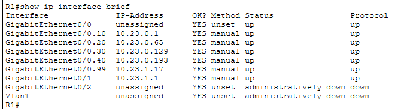
show ip interface brief: all five VLAN subinterfaces and the WAN link are up/up with their planned addresses. (Gi0/2 is unused and stays shut.)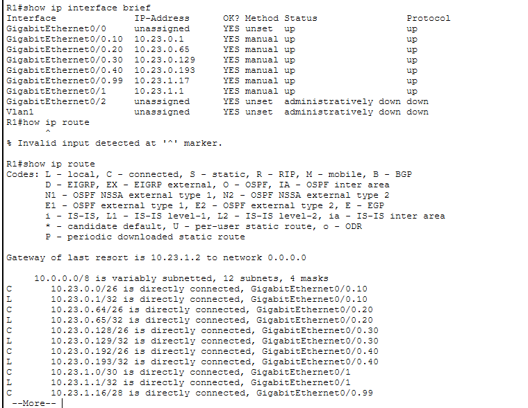
show ip route: a connected (C) and local (L) route for every VLAN and for the WAN /30, and "Gateway of last resort is 10.23.1.2" confirming the default route. The "% Invalid input" line is a typo (how ip route) corrected on the next line.| Server | IP / mask | Gateway | DNS | Service enabled |
|---|---|---|---|---|
| DHCP-SRV | 10.23.0.194/26 | 10.23.0.193 | 10.23.0.195 | DHCP (pools below) |
| DNS-SRV | 10.23.0.195/26 | 10.23.0.193 | 10.23.0.195 | DNS — A record files.tshimo.test → 10.23.0.196 |
| FILE-SRV | 10.23.0.196/26 | 10.23.0.193 | 10.23.0.195 | HTTP and FTP |
| Pool | Default gateway | DNS | Start address | Mask | Max users |
|---|---|---|---|---|---|
| ADMIN-POOL | 10.23.0.1 | 10.23.0.195 | 10.23.0.10 | 255.255.255.192 | 50 |
| SALES-POOL | 10.23.0.65 | 10.23.0.195 | 10.23.0.74 | 255.255.255.192 | 50 |
| WH-POOL | 10.23.0.129 | 10.23.0.195 | 10.23.0.138 | 255.255.255.192 | 50 |
| serverPool | 10.23.0.193 | 10.23.0.195 | 10.23.0.200 | 255.255.255.192 | 20 |
A PC's DHCP request is a broadcast and never leaves its own VLAN. R1's ip helper-address 10.23.0.194 on each user subinterface picks it up and forwards it to DHCP-SRV as unicast, stamped with the subinterface's gateway address. The server uses that gateway to choose the matching pool. Each pool starts nine addresses above its gateway, which keeps .1–.9 of every /26 free for infrastructure. All 40 user PCs were set to DHCP. Leases were checked on one PC per department (Figure 8), and three more PCs were used successfully in later tests.
10.23.0.74/26, gateway .65 — first SALES-POOL lease.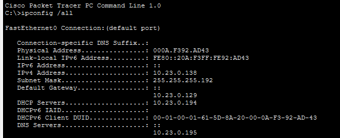
10.23.0.138/26, gateway .129 — first WH-POOL lease.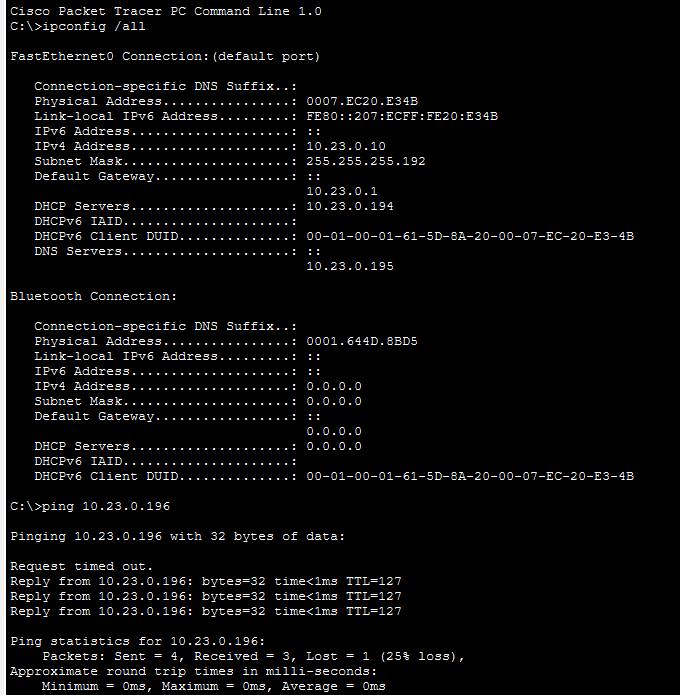
ipconfig /all: 10.23.0.10/26, gateway 10.23.0.1, DHCP server 10.23.0.194, DNS 10.23.0.195. The ping that follows (VLAN 10 → file server in VLAN 40) gets 3 of 4 replies; the first is lost while ARP resolves, which is normal.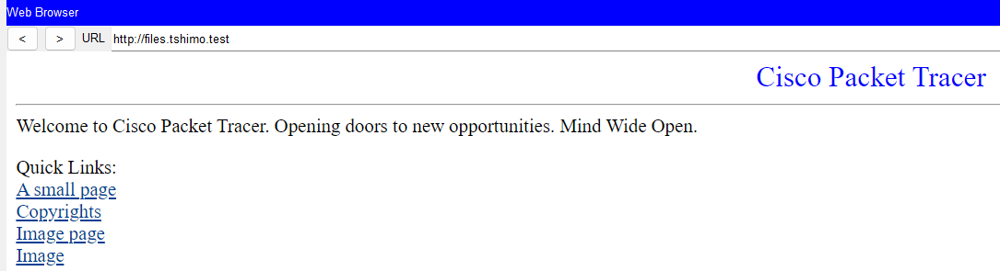
http://files.tshimo.test: the name resolves via DNS-SRV, and FILE-SRV serves the page.Every test was run live in Packet Tracer against the configured network. Observed results come only from what the simulation showed.
| ID | Test | Observed | Result | Fig. |
|---|---|---|---|---|
| PHY-01 | Topology and cabling | All 7 network devices, 43 end devices and 49 links present; crossover on like-device links | PASS | 1, 2 |
| L2-00 | SW-CORE show cdp neighbors | Fa0/1–Fa0/4 → SW-ADM, SW-SAL, SW-WH, SW-SRV as planned | PASS | 3 |
| L2-01 | SW-WH show vlan brief | VLAN 30 active on Fa0/2–Fa0/21 | PASS | 5 |
| L2-02 | SW-CORE show interfaces trunk | All trunks: 802.1Q, native 99, allowed 10,20,30,40,99 | PASS | 4 |
| L3-01 | R1 show ip interface brief | 5 subinterfaces + Gi0/1 up/up with planned addresses | PASS | 6 |
| L3-02 | R1 show ip route | All VLAN and WAN routes connected; default via 10.23.1.2 | PASS | 7 |
| DHCP-01 | One PC per user VLAN, ipconfig /all | Each got the first address of its own pool, correct gateway and DNS | PASS | 8a–c |
| LAN-01 | WH-PC-01 → WH-PC-02 (same VLAN) | 4/4 replies | PASS | 10 |
| ROUTE-01 | Admin and Sales → FILE-SRV (across VLANs) | ADMIN-PC-01 3/4 (first lost to ARP), SALES-PC-01 4/4 | PASS | 8a, 11 |
| DNS-01 | Browser → files.tshimo.test | Name resolved, page loaded | PASS | 9 |
| NAT-01 | PC → 203.0.113.1 through NAT | SALES-PC-03 4/4 replies, 0% loss | PASS | 12, 13 |
| CR1-01 | Warehouse capacity after CR1 | 20 ports in VLAN 30, no subnet, gateway or trunk change | PASS | 5 |
ROUTE-01 note: Warehouse's own path to the file server is demonstrated in Section 7 (Figure 14, healthy baseline: 4/4).
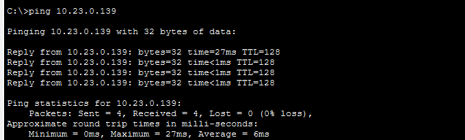
10.23.0.139), same VLAN: 4/4.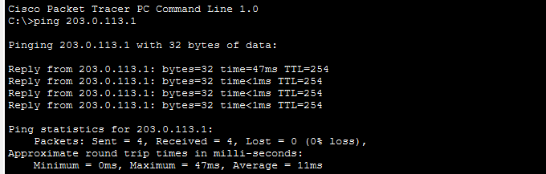
203.0.113.1 (ISP loopback) through NAT: 4/4, 0% loss.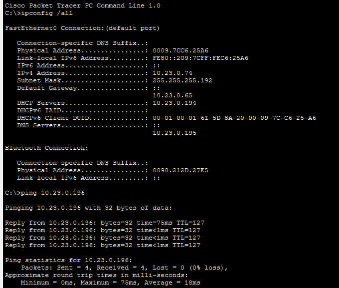
10.23.0.74) → FILE-SRV (VLAN 40, 10.23.0.196): 4/4. TTL 127 instead of 128 shows the packet crossed one router hop (R1).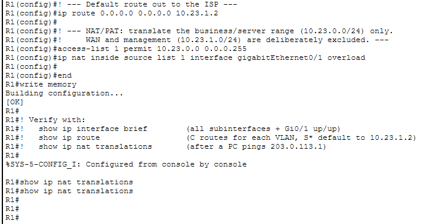
show ip nat translations. The table is empty because it was checked about six minutes after the NAT ping, and dynamic PAT entries expire after a short idle time. The successful ping in Figure 12 is the evidence that translation worked: an untranslated 10.23.0.x source could not have got a reply back from the ISP.A change on the core switch removes VLAN 30 (Warehouse) from the allowed-VLAN list on the SW-CORE → SW-WH trunk. It's a realistic one-word mistake: typing switchport trunk allowed vlan 10,20,40,99 instead of …10,20,30,40,99, or running remove 30 on the wrong port.
Why it qualifies as Advanced:
Work up the OSI model and only move up a layer once the one below is proven good. Use a control test from an unaffected department to scope the fault before touching any device. Treat expected symptoms as hypotheses to check, not conclusions.
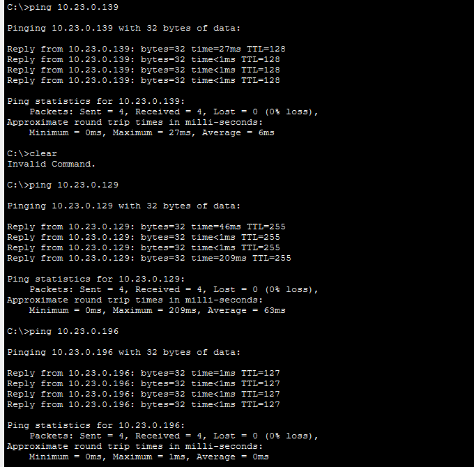
10.23.0.138) reaches WH-PC-02 (.139), its gateway (.129) and FILE-SRV (.196): all 4/4. The Packet Tracer file was saved at this point.| Test | Expected (hypothesis) | Observed |
|---|---|---|
WH-PC-01 → gateway .129 | Fail: path to R1 crosses the trunk | 100% loss |
WH-PC-01 → FILE-SRV .196 | Fail: another VLAN, needs R1 | 100% loss |
WH-PC-01 → WH-PC-02 .139 | Work: same switch, same VLAN, no trunk needed | 4/4 |
| ADMIN-PC-01 → FILE-SRV (control) | Work: Admin uses Fa0/1, not Fa0/3 | 4/4 |
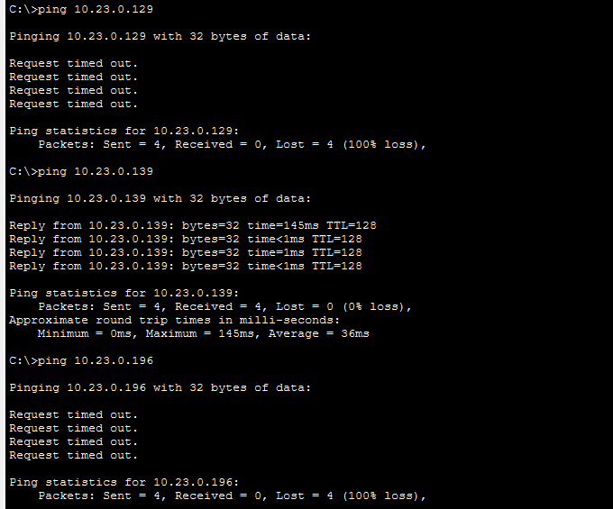
.129) and file server (.196) fail; WH-PC-02 (.139) still answers.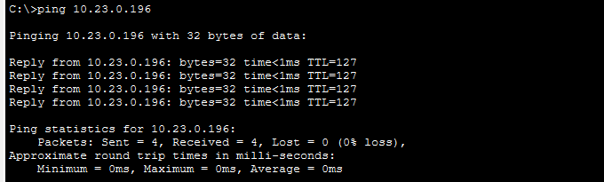
| Layer | Evidence | Conclusion |
|---|---|---|
| Scope | Admin works; Warehouse PCs reach each other | R1, the servers and SW-WH's access ports are fine. The problem lies on the path between SW-WH and R1. |
| 1 — Physical | Link lights up; WH-PC-01 ↔ WH-PC-02 works | Cables and ports are fine. |
| 3 — Network | WH-PC-01 still holds its DHCP lease 10.23.0.138/26, gateway .129; R1's Gi0/0.30 was up/up before the change | Not an addressing or gateway fault. |
| 2 — Data link | SW-CORE show interfaces trunk (Figure 17) | All five trunk ports up, native 99. Fa0/3's allowed list reads 10,20,40,99; every other port reads 10,20,30,40,99. Fault found. |
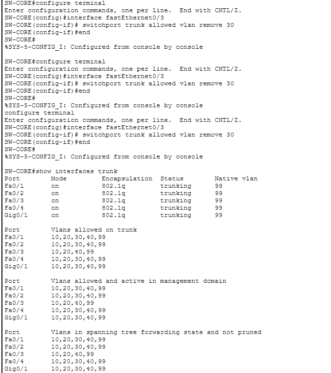
show interfaces trunk: Fa0/3 alone is missing VLAN 30 across all three allowed/active/forwarding lists. Gi0/1 to R1 is trunking normally.add 30 restores exactly the one VLAN that was removed, without retyping, and so without risking, the rest of the list.
| Check | Expected | Observed |
|---|---|---|
SW-CORE show interfaces trunk | Fa0/3 allows 10,20,30,40,99, same as the others | PASS Fa0/3 back to 10,20,30,40,99 |
WH-PC-01 → gateway .129 | Replies | 4/4 |
WH-PC-01 → FILE-SRV .196 | Replies | 4/4 |
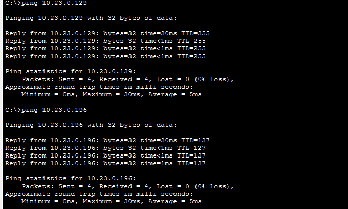
.129) and FILE-SRV (.196) again, 4/4 each, 0% loss.tshimo-agri-hq-milestone-2.pkt was saved after the fix, with write memory run on SW-CORE. It contains the healthy, repaired network, not the faulted one. The complete working record is in troubleshooting/advanced-fault-isolation.md.These are the real problems hit during implementation, recorded as they happened rather than tidied away.
| Issue | How it was detected | Resolution | What it shows |
|---|---|---|---|
| Core port plan used Gi0/2–Gi0/5 on SW-CORE | Checking the plan against the 2960-24TT's actual ports before building: it has only two Gigabit ports | Access uplinks moved to Fa0/1–Fa0/4; R1 kept Gi0/1 | Port-only change; the VLAN and addressing design was untouched |
| Like-device links cabled straight-through | Reviewing the build against the rubric's "correct cabling" criterion | ISP–R1 and the four SW-CORE uplinks recabled as crossover; baseline resaved | Correct cabling no longer depends on Auto-MDIX |
| Native-VLAN-mismatch and spanning-tree "inconsistent VLAN" messages | Console logs on SW-CORE while the switches were configured one at a time | None needed: each cleared once both ends of the trunk had native VLAN 99 | A trunk's two ends must agree on its native VLAN |
| Empty NAT translation table | show ip nat translations run minutes after a successful NAT ping | None needed: PAT entries time out when idle; the successful ping is the proof | Check translations immediately after generating traffic |
| Wrong config pasted onto the core switch during the fault demo | The Admin control test failed three times in a row (25%, then 100%, then 100% loss), and the core switch's prompt read SW-WH#. show cdp neighbors showed 5 neighbours, so it was physically the core switch. The access-port block from sw-wh.txt had turned three of its trunks (to SW-SAL, SW-WH and SW-SRV) into VLAN 30 access ports, which cut the path to the file server for every department. | Re-applied sw-core.txt in full, confirmed all trunks with show interfaces trunk, saved, then re-injected only the intended one-line fault and re-ran every symptom test | Using CDP to confirm a device's identity, and refusing to accept a symptom that didn't fit the design |
| Item | Before CR1 | After CR1 (as built) | Changed? |
|---|---|---|---|
| Warehouse staff / PCs | 12 | 20 (WH-PC-01…20) | Yes — endpoints only |
| SW-WH access ports in VLAN 30 | Fa0/2–Fa0/13 | Fa0/2–Fa0/21 | Yes — port range only |
| VLAN 30 subnet | 10.23.0.128/26 | 10.23.0.128/26 | No |
| Gateway / R1 subinterface | 10.23.0.129, Gi0/0.30 | 10.23.0.129, Gi0/0.30 | No |
| Trunks, routing, NAT | — | — | No |
| DHCP WH-POOL | 50 leases | 50 leases (20 used) | No |
CR1 added eight people without any redesign. The /26 already had room for 62 hosts, and the 24-port SW-WH already had the ports. Figure 5 shows the 20 Warehouse ports live in VLAN 30.
Nothing built in Milestone 2 uses any address in 10.23.128.0/17, which stays reserved for the branch. All HQ addresses, including the WAN /30 and management /28, sit inside 10.23.0.0/23, so HQ can still be advertised to a branch as a single summary route. The NAT ACL and the ISP configuration also leave that space untouched.
Repository: tshimo-agri-network — https://github.com/MALULEKE-KS/tshimo-agri-network
| Commit | What it added |
|---|---|
| Add Milestone 2 execution map and Packet Tracer build walkthrough | Phase plan, rubric map, build guide, repository hygiene |
| Draft IOS configurations for switches, R1 and ISP, plus server setup | All device command files, written and reviewed before being applied |
| Add baseline Packet Tracer topology and physical build evidence | Unconfigured build, topology screenshots, Gate B record |
| Milestone 2 implementation, testing and fault-isolation evidence | Configured network, 20 screenshots, test log, troubleshooting record, this report |
I declare that this implementation and its accompanying documentation are my own work, produced for CMPG 325 at North-West University, Mahikeng campus, in accordance with the NWU AI Policy. I built and configured the network in Cisco Packet Tracer, ran every test and captured every screenshot shown in this document, and I understand and can defend every configuration and troubleshooting step described here.
These are the exact command files pasted into each device's CLI, reproduced from configs/. Lines starting with ! are comments that IOS ignores. Server settings are made in Packet Tracer's GUI and are given in Section 5.
! ============================================================ ! SW-CORE — Tshimo Agri Supplies HQ — Layer 2 distribution switch ! Cisco 2960-24TT ! Role: trunks R1 (Gi0/1) down to the four access switches (Fa0/1-4). ! Holds the full VLAN database since every VLAN passes through here. ! Paste this block into SW-CORE's CLI after Gate B (physical build) passes. ! ============================================================ enable configure terminal hostname SW-CORE no ip domain-lookup ! --- VLAN database --- vlan 10 name ADMIN vlan 20 name SALES vlan 30 name WAREHOUSE vlan 40 name SERVERS vlan 99 name MGMT-NATIVE exit ! --- Uplink to R1 (802.1Q trunk, native VLAN 99) --- interface gigabitEthernet0/1 description Uplink to R1 Gi0/0 switchport mode trunk switchport trunk native vlan 99 switchport trunk allowed vlan 10,20,30,40,99 no shutdown exit ! --- Trunks to the four access switches --- interface range fastEthernet0/1 - 4 switchport mode trunk switchport trunk native vlan 99 switchport trunk allowed vlan 10,20,30,40,99 no shutdown exit interface fastEthernet0/1 description Trunk to SW-ADM Fa0/1 exit interface fastEthernet0/2 description Trunk to SW-SAL Fa0/1 exit interface fastEthernet0/3 description Trunk to SW-WH Fa0/1 exit interface fastEthernet0/4 description Trunk to SW-SRV Fa0/1 exit ! --- Management SVI on the native VLAN --- interface vlan 99 ip address 10.23.1.18 255.255.255.240 no shutdown exit ip default-gateway 10.23.1.17 end write memory ! ------------------------------------------------------------ ! If Packet Tracer's 2960 rejects "switchport mode trunk" with an ! encapsulation error, add this line before it on each trunk interface: ! switchport trunk encapsulation dot1q ! (Not expected on a real 2960-24TT — it's 802.1Q-only — but PT model ! behaviour can vary; report the exact error if you see one.) ! ------------------------------------------------------------ ! Verify with: ! show vlan brief ! show interfaces trunk ! show ip interface brief
! ============================================================ ! SW-ADM — Tshimo Agri Supplies HQ — Admin access switch ! Cisco 2960-24TT ! Role: 8 Admin PCs on VLAN 10, trunked back to SW-CORE Fa0/1. ! Paste this block into SW-ADM's CLI after Gate B (physical build) passes. ! ============================================================ enable configure terminal hostname SW-ADM no ip domain-lookup ! --- VLANs used locally (full DB lives on SW-CORE) --- vlan 10 name ADMIN vlan 99 name MGMT-NATIVE exit ! --- Uplink to SW-CORE (802.1Q trunk, native VLAN 99) --- interface fastEthernet0/1 description Uplink to SW-CORE Fa0/1 switchport mode trunk switchport trunk native vlan 99 switchport trunk allowed vlan 10,20,30,40,99 no shutdown exit ! --- Access ports: 8 Admin PCs --- interface range fastEthernet0/2 - 9 switchport mode access switchport access vlan 10 spanning-tree portfast no shutdown exit ! --- Management SVI on the native VLAN --- interface vlan 99 ip address 10.23.1.19 255.255.255.240 no shutdown exit ip default-gateway 10.23.1.17 end write memory ! Verify with: ! show vlan brief ! show interfaces trunk ! show ip interface brief
! ============================================================ ! SW-SAL — Tshimo Agri Supplies HQ — Sales access switch ! Cisco 2960-24TT ! Role: 12 Sales PCs on VLAN 20, trunked back to SW-CORE Fa0/2. ! Paste this block into SW-SAL's CLI after Gate B (physical build) passes. ! ============================================================ enable configure terminal hostname SW-SAL no ip domain-lookup ! --- VLANs used locally (full DB lives on SW-CORE) --- vlan 20 name SALES vlan 99 name MGMT-NATIVE exit ! --- Uplink to SW-CORE (802.1Q trunk, native VLAN 99) --- interface fastEthernet0/1 description Uplink to SW-CORE Fa0/2 switchport mode trunk switchport trunk native vlan 99 switchport trunk allowed vlan 10,20,30,40,99 no shutdown exit ! --- Access ports: 12 Sales PCs --- interface range fastEthernet0/2 - 13 switchport mode access switchport access vlan 20 spanning-tree portfast no shutdown exit ! --- Management SVI on the native VLAN --- interface vlan 99 ip address 10.23.1.20 255.255.255.240 no shutdown exit ip default-gateway 10.23.1.17 end write memory ! Verify with: ! show vlan brief ! show interfaces trunk ! show ip interface brief
! ============================================================ ! SW-WH — Tshimo Agri Supplies HQ — Warehouse access switch ! Cisco 2960-24TT ! Role: 20 Warehouse PCs (12 existing + 8 CR1) on VLAN 30, ! trunked back to SW-CORE Fa0/3. ! Paste this block into SW-WH's CLI after Gate B (physical build) passes. ! ! NOTE: SW-CORE's Fa0/3 is the trunk port used for the assigned ! troubleshooting fault (VLAN 30 removed from its allowed list). ! This file configures the healthy baseline only — the fault is ! injected later, on SW-CORE, per troubleshooting/advanced-fault-isolation.md. ! ============================================================ enable configure terminal hostname SW-WH no ip domain-lookup ! --- VLANs used locally (full DB lives on SW-CORE) --- vlan 30 name WAREHOUSE vlan 99 name MGMT-NATIVE exit ! --- Uplink to SW-CORE (802.1Q trunk, native VLAN 99) --- interface fastEthernet0/1 description Uplink to SW-CORE Fa0/3 switchport mode trunk switchport trunk native vlan 99 switchport trunk allowed vlan 10,20,30,40,99 no shutdown exit ! --- Access ports: 20 Warehouse PCs (includes CR1 growth) --- interface range fastEthernet0/2 - 21 switchport mode access switchport access vlan 30 spanning-tree portfast no shutdown exit ! --- Management SVI on the native VLAN --- interface vlan 99 ip address 10.23.1.21 255.255.255.240 no shutdown exit ip default-gateway 10.23.1.17 end write memory ! Verify with: ! show vlan brief ! show interfaces trunk ! show ip interface brief
! ============================================================ ! SW-SRV — Tshimo Agri Supplies HQ — Server access switch ! Cisco 2960-24TT ! Role: DHCP-SRV, DNS-SRV, FILE-SRV on VLAN 40, trunked back to SW-CORE Fa0/4. ! Paste this block into SW-SRV's CLI after Gate B (physical build) passes. ! ============================================================ enable configure terminal hostname SW-SRV no ip domain-lookup ! --- VLANs used locally (full DB lives on SW-CORE) --- vlan 40 name SERVERS vlan 99 name MGMT-NATIVE exit ! --- Uplink to SW-CORE (802.1Q trunk, native VLAN 99) --- interface fastEthernet0/1 description Uplink to SW-CORE Fa0/4 switchport mode trunk switchport trunk native vlan 99 switchport trunk allowed vlan 10,20,30,40,99 no shutdown exit ! --- Access ports: DHCP-SRV, DNS-SRV, FILE-SRV --- interface range fastEthernet0/2 - 4 switchport mode access switchport access vlan 40 spanning-tree portfast no shutdown exit ! --- Management SVI on the native VLAN --- interface vlan 99 ip address 10.23.1.22 255.255.255.240 no shutdown exit ip default-gateway 10.23.1.17 end write memory ! Verify with: ! show vlan brief ! show interfaces trunk ! show ip interface brief
! ============================================================ ! R1 — Tshimo Agri Supplies HQ — edge router ! Cisco 2911 ! Role: router-on-a-stick inter-VLAN routing on Gi0/0 (trunk to SW-CORE Gi0/1), ! DHCP relay to DHCP-SRV, WAN to ISP on Gi0/1, NAT/PAT overload. ! Paste AFTER the five switch configs are in. ! ============================================================ enable configure terminal hostname R1 no ip domain-lookup ! --- Physical trunk interface: no IP, just bring it up --- interface gigabitEthernet0/0 description Trunk to SW-CORE Gi0/1 no ip address no shutdown exit ! --- One subinterface per VLAN = that VLAN's default gateway --- interface gigabitEthernet0/0.10 description VLAN 10 ADMIN gateway encapsulation dot1Q 10 ip address 10.23.0.1 255.255.255.192 ip helper-address 10.23.0.194 ip nat inside exit interface gigabitEthernet0/0.20 description VLAN 20 SALES gateway encapsulation dot1Q 20 ip address 10.23.0.65 255.255.255.192 ip helper-address 10.23.0.194 ip nat inside exit interface gigabitEthernet0/0.30 description VLAN 30 WAREHOUSE gateway encapsulation dot1Q 30 ip address 10.23.0.129 255.255.255.192 ip helper-address 10.23.0.194 ip nat inside exit interface gigabitEthernet0/0.40 description VLAN 40 SERVERS gateway encapsulation dot1Q 40 ip address 10.23.0.193 255.255.255.192 ip nat inside exit ! Native VLAN 99: untagged frames on the trunk belong here interface gigabitEthernet0/0.99 description VLAN 99 MGMT-NATIVE gateway encapsulation dot1Q 99 native ip address 10.23.1.17 255.255.255.240 exit ! --- WAN to ISP --- interface gigabitEthernet0/1 description WAN to ISP ip address 10.23.1.1 255.255.255.252 ip nat outside no shutdown exit ! --- Default route out to the ISP --- ip route 0.0.0.0 0.0.0.0 10.23.1.2 ! --- NAT/PAT: translate the business/server range (10.23.0.0/24) only. ! WAN and management (10.23.1.0/24) are deliberately excluded. --- access-list 1 permit 10.23.0.0 0.0.0.255 ip nat inside source list 1 interface gigabitEthernet0/1 overload end write memory ! Verify with: ! show ip interface brief (all subinterfaces + Gi0/1 up/up) ! show ip route (C routes for each VLAN, S* default to 10.23.1.2) ! show ip nat translations (after a PC pings 203.0.113.1)
! ============================================================ ! ISP — simulated upstream provider ! Cisco 2911 ! Role: far end of the R1 WAN /30, plus a loopback acting as an ! "internet" test target for NAT verification. ! ! ISP port facing R1 Gi0/1 is Gi0/0. Confirmed 2 Oct 2026: this file was ! applied unchanged, R1 Gi0/1 came up/up, and a PC reached 203.0.113.1 ! through NAT — impossible unless the link lands on the addressed Gi0/0. ! ============================================================ enable configure terminal hostname ISP no ip domain-lookup interface gigabitEthernet0/0 description WAN to Tshimo R1 Gi0/1 ip address 10.23.1.2 255.255.255.252 no shutdown exit ! Simulated internet host interface loopback0 description Internet test target ip address 203.0.113.1 255.255.255.255 exit end write memory ! No route back to 10.23.0.0/24 is needed: R1 NATs every inside ! host to 10.23.1.1, which the ISP already reaches directly.